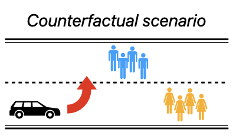
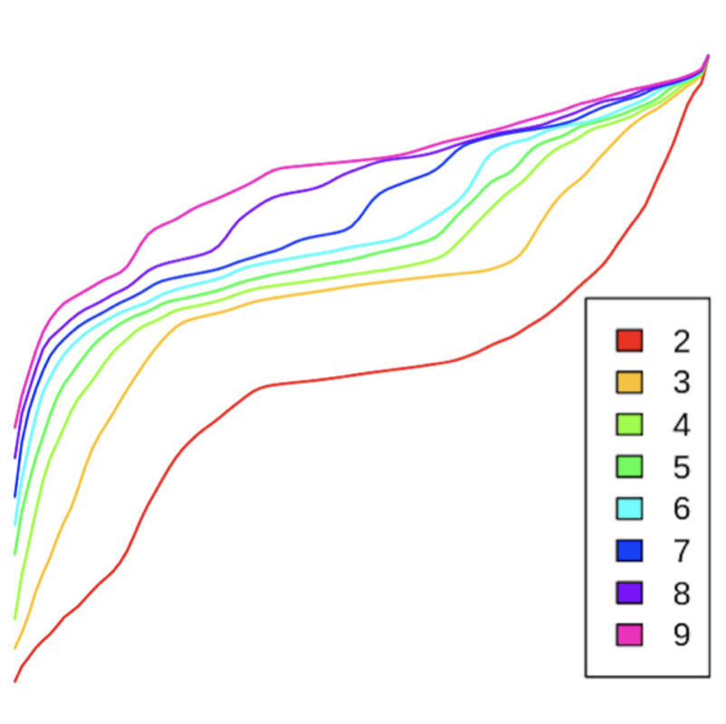

Harry Mayne
PhD @ University of Oxford
LLM explainability & interpretability.
LLM explainability & interpretability.


I'm an Astra Fellow with Owain Evans (Truthful AI) and a PhD researcher at the University of Oxford.
My research evaluates LLM self-explanations: the natural language explanations LLMs give to justify their own decision-making. I measure whether these explanations are faithful to models' true internal reasoning, and develop new training incentives to improve faithfulness. I'm motivated by AI safety, and also work on LLM evals and the science of evals, including the LingOly and LingOly-TOO reasoning benchmarks. My work has been published at leading venues including NeurIPS, ICLR, and EMNLP. I'm supervised by Prof. Adam Mahdi and Prof. Jakob Foerster.
Selected Publications



Large language models can help boost food production, but be mindful of their risks.
D De Clercq, E Nehring, H Mayne, A Mahdi.
Frontiers in Artificial Intelligence, 2024
D De Clercq, E Nehring, H Mayne, A Mahdi.
Frontiers in Artificial Intelligence, 2024

Unsupervised learning approaches for identifying ICU patient subgroups: Do results generalise?
H Mayne, G Parsons, A Mahdi.
2024
H Mayne, G Parsons, A Mahdi.
2024
About
DownloadCV
I'm a final year PhD researcher. I've had a bit of an unusual path to get to where I am today, having originally studied economics.
Education
Oxford Internet Institute, University of Oxford
DPhil Social Data Science
Researching language model explainability and interpretability
Researching language model explainability and interpretability
2023 - 2026
Oxford Internet Institute, University of Oxford
MSc Social Data Science
Distinction, 77%
Oxford Internet Institute Thesis Prize for best dissertation (88%)
Distinction, 77%
Oxford Internet Institute Thesis Prize for best dissertation (88%)
2022 - 2023
Selwyn College, University of Cambridge
BA Economics
Double First Class, top 10% of cohort
Awarded the Patrick Cross Prize for exceptional performance in the Economics Tripos
Double First Class, top 10% of cohort
Awarded the Patrick Cross Prize for exceptional performance in the Economics Tripos
2019 - 2022
Grants
Grand Union DPT, Economic and Social Research Council
Full PhD Scholarship
2022 - 2026
Blog and resources
University of Cambridge
Economics Interview Questions
Read More
Contact
If you would like to discuss collaborations, talks or teaching then please get in touch.
harry.mayne [at] oii.ox.ac.uk
harry.mayne [at] oii.ox.ac.uk